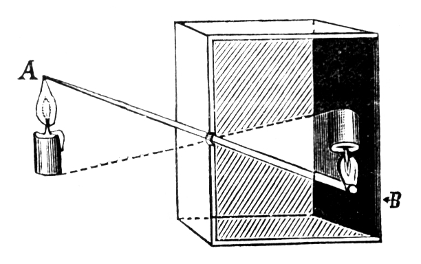

3 Obrazy cyfrowe
Obrazy w formie cyfrowej są obecnie powszechnie obowiązującym standardem przechowywania, wyświetlania i modyfikowania obrazów. Należy jednak wspomnieć, że jeszcze niedawno, bo na przełomie wieków aparaty i kamery cyfrowe były rzadkością i na rynku fotograficznym dominowały klasyczne obrazy wykonane na kliszy czy taśmie (w przypadku wideo). Fotografia analogowa, bo tak ją należy nazywać powstała w XIX wieku, jako efekt połączenia wielu wcześniejszych odkryć, takich jak:
- kamera szczelinowa (łac. camera obscura) - prosty przyrząd znany już w starożytnej Grecji pozwalający uzyskać rzeczywisty obraz. Zasada działania polegała na użyciu pudełka z niewielkim otworem (0,3-1 mm) spełniającą rolę obiektywu. Na drugiej stronie pudełka pojawiał się odwrócony “do góry nogami” obraz wyświetlany na zmatowionym szkle lub kalce technicznej.

wykorzystanie chlorku srebra przez Georga Fabricusa w 1556 r., który pod wpływem promieni słonecznych się zaczerniał,
światłoczułość azotanu srebra, którą zaobserwował Johann Heinrich Schulze (1724 r.),
Johann Heinrich Schulze uzyskał pierwsze odwzorowanie obrazu na emulsji światłoczułej sporządzonej z chlorku srebra na podkładzie z białej kredy (1725 r.),
pierwsza fotografia, stworzona przez Francuza Josepha-Nicéphore'a Niepce'a na wypolerowanej płycie metalowej (1826 r.),
1839 – rok uznawany za właściwą datę wynalezienia fotografii. Francuz Louis Jacques Daguerre zademonstrował Akademii Francuskiej zdjęcie fotograficzne otrzymane na warstewce jodku srebra, powstałej w wyniku działania pary jodu na wypolerowaną płytę miedzianą pokrytą srebrem,
w tym samym czasie nad otrzymywaniem obrazów tworzonych przez światło pracował angielski uczony William Henry Fox Talbot,
1861 – fizykowi Jamesowi Clerkowi Maxwellowi udało się uzyskać pierwszą trwałą fotografię barwną,
1907 – bracia Lumière wprowadzili na rynek pierwsze szklane kolorowe płyty światłoczułe do fotografii barwnej (Autochrome). Były one produkowane na bazie barwionej skrobi ziemniaczanej. Autochromy pomimo nowatorskiego użycia koloru miały swoje wady to znaczy małą czułość, duże ziarno i konieczność używania statywu w przeciwieństwie do materiałów czarno-białych,
1935 – wprowadzono do sprzedaży pierwszy współczesny trójwarstwowy film barwny – Kodachrome,
większość współczesnych filmów barwnych, oprócz Kodachrome, wykorzystuje technologię stworzoną dla filmu Agfacolor w 1936 roku,
Od 1963 – jest dostępny natychmiastowy materiał kolorowy firmy Polaroid Corporation,
najpowszechniej stosowanym formatem zapisu analogowego obrazu wideo były taśmy VHS (ang. Video Home System) wprowadzone w 1976 roku przez firmę JVC. Nośnikiem używanym do zapisu zarówno obrazu, jak i dźwięku była taśma magnetyczna. Wcześniej tego rodzaju taśmy były wykorzystywane tylko do zapisywania dźwięku. Rozdzielczość pozioma obrazu w formacie VHS wynosi około 240 linii (dla obrazu kolorowego) i wynika z ograniczonego pasma dla sygnału koloru. Pod koniec lat 80 wprowadzono „ulepszoną” wersję VHS HQ, przy czym poprawiono w tej wersji głównie odczyt poprzez wprowadzenie systemu redukcji zakłóceń związanych z błędami odczytu taśmy (ang. dropout’s). Pozostałe parametry obrazu pozostały bez zmian. W formacie VHS fonia zapisywana jest wzdłuż taśmy przy krawędzi – przy przesuwie 2,239 cm/sek uzyskuje pasmo 80 Hz–10 kHz.
Chociaż prosta geometria kamery szczelinowej sprawia, że jest ona przydatna do zrozumienia podstawowych zasad tworzenia się obrazu, nigdy nie jest tak naprawdę wykorzystywana w praktyce. Jednym z problemów z kamerą szczelinową jest to, że wymaga ona bardzo małego otworu, aby uzyskać ostry obraz. To z kolei zmniejsza ilość przepuszczanego światła i prowadzi do ekstremalnie długich czasów naświetlania. W rzeczywistości stosuje się szklane soczewki lub systemy soczewek optycznych, których właściwości optyczne są znacznie lepsze w wielu aspektach, ale oczywiście są też znacznie bardziej złożone. W modelu (patrz Rysunek 3.1 (b)) zakłada się, że soczewka jest symetryczna i nieskończenie cienka, tak że wszystkie przechodzące przez nią promienie świetlne przecinają wirtualną płaszczyznę w środku soczewki. Wynikowa geometria obrazu jest taka sama jak w przypadku kamery szczelinowej. Model ten nie jest wystarczająco złożony, aby objąć fizyczne szczegóły rzeczywistych układów soczewek, takie jak zniekształcenia geometryczne i różne właściwości załamania światła w różnych kolorach. Tak więc, choć ten prosty model wystarcza do naszych celów (tj. zrozumienia mechaniki pozyskiwania obrazu), w literaturze można znaleźć znacznie bardziej szczegółowe modele uwzględniające te dodatkowe złożoności.


W przeciwieństwie do fotografii analogowej, fotografia cyfrowa nie wykorzystuje substancji chemicznej do utrwalenia obrazu ale zapisuje energię świetlną dostarczaną przez obiektyw do matrycy światłoczułej. Aby przekształcić ten obraz w obraz cyfrowy na naszym komputerze, konieczne są następujące trzy główne kroki:
- Rozkład światła ciągłego musi być próbkowany przestrzennie.
- Dalej funkcja ta musi być próbkowana w czasie, aby stworzyć pojedynczy (nieruchomy) obraz.
- Wreszcie, wartości wynikowe muszą być skwantowane do skończonego zakresu liczb całkowitych (lub wartości zmiennoprzecinkowych), tak aby mogły być reprezentowane przez liczby.
Próbkowanie przestrzenne obrazu (czyli zamiana sygnału ciągłego na jego reprezentację dyskretną) zależy od geometrii elementów sensorycznych urządzenia akwizycyjnego (np. kamery cyfrowej lub wideo). Poszczególne elementy czujnika są ułożone w uporządkowanych rzędach, prawie zawsze pod kątem prostym do siebie, wzdłuż płaszczyzny czujnika (rys. -Rysunek 3.2). Aparaty cyfrowe rejestrują obraz za pomocą matrycy CCD (ang. Charge-Coupled Device) lub CMOS (ang.Complementary Metal-Oxide-Semiconductor), która przetwarza światło na sygnał cyfrowy.
Próbkowanie czasowe odbywa się poprzez pomiar w regularnych odstępach czasu ilości światła padającego na każdy pojedynczy element czujnika. CCD w aparacie cyfrowym robi to poprzez wyzwolenie procesu ładowania, a następnie zmierzenie ilości ładunku elektrycznego, który nagromadził się w określonym czasie, w którym CCD była oświetlona.

W celu przechowywania i przetwarzania wartości obrazu w komputerze są one powszechnie konwertowane do skali liczb całkowitych (np. \(256 = 2^8\) lub \(4096 = 2^{12}\)). Sporadycznie w zastosowaniach profesjonalnych, takich jak obrazowanie medyczne, stosuje się wartości zmiennoprzecinkowe. Konwersja odbywa się za pomocą konwertera analogowo-cyfrowego, który jest zazwyczaj wbudowanym bezpośrednio w elektronikę czujnikiem, tak że konwersja następuje podczas rejestracji obrazu lub jest wykonywana przez specjalny interfejs.

Matryce CMOS są tańsze w produkcji, bardziej energooszczędne i mogą być łatwiej integrowane z innymi elementami elektronicznymi w aparacie, takimi jak procesor obrazu, a także z innymi funkcjami, takimi jak GPS, WiFi czy Bluetooth. Matryce CCD są bardziej wrażliwe na światło i mają lepszą jakość obrazu, zwłaszcza w warunkach słabego oświetlenia. Natomiast matryce CMOS są lepsze do zastosowań, w których ważna jest wysoka przepustowość i szybkość rejestracji obrazów oraz niskie zużycie energii.
Najpowszechniej stosowany podział obrazów cyfrowych zapisanych na nośniku, to grafika rastrowa i grafika wektorowa. Grafika rastrowa (ang. raster image), zwana też grafiką bitmapową, to rodzaj grafiki, w której obraz jest składany z pojedynczych pikseli. Każdy piksel jest jakiegoś koloru i jest zapisany jako indywidualna jednostka danych. Obrazy rastrowe są zwykle zapisywane w formatach takich jak JPEG, PNG lub GIF.
Grafika wektorowa (ang. vector image) to rodzaj grafiki, w której obraz jest składany z kształtów geometrycznych takich jak linie, koła i trójkąty. Każdy kształt jest opisany matematycznie i jest zapisany jako indywidualna jednostka danych. Obrazy wektorowe są zwykle zapisywane w formatach takich jak SVG, AI lub EPS.

Główna różnica między grafiką rastrową a wektorową polega na tym, że obrazy rastrowe składają się z indywidualnych pikseli, podczas gdy obrazy wektorowe składają się z matematycznie opisanych kształtów. Obrazy rastrowe tracą jakość po powiększeniu, ponieważ piksele są widoczne, podczas gdy obrazy wektorowe zachowują jakość po powiększeniu, ponieważ są składane z kształtów matematycznych. Obie techniki, grafika rastrowa i wektorowa, mają swoje własne zalety i wady, i nie ma jednej techniki, która jest ogólnie uważana za bardziej dokładną.
Grafika rastrowa jest bardziej odpowiednia do przedstawiania szczegółowych i skomplikowanych obrazów, takich jak zdjęcia lub malarstwo. Są one bardziej naturalne i realistyczne. Jednak, kiedy obrazy te są powiększane, ich jakość traci, ponieważ piksele są widoczne.
Grafika wektorowa jest lepsza do tworzenia prostych i precyzyjnych kształtów, takich jak loga, ikony i ilustracje. Są one bardziej elastyczne i skalowalne, ponieważ składają się z matematycznie opisanych kształtów, co pozwala na powiększanie bez utraty jakości. Jednakże, nie są one tak naturalne i realistyczne jak obrazy rastrowe.
W ramach tego przedmiotu głównie będziemy się zajmować grafiką rastrową.
Rozdzielczość jest jednym z najważniejszych czynników wpływających na jakość obrazu. Im więcej pikseli ma obraz, tym więcej szczegółów jest widocznych. Rozdzielczość obrazu określa wymiary przestrzenne obrazu w świecie rzeczywistym i jest podawana jako liczba elementów obrazu na jeden pomiar; na przykład w punktach na cal (dpi) lub liniach na cal (lpi) w przypadku produkcji poligraficznej lub w pikselach na kilometr w przypadku zdjęć satelitarnych. Jednocześnie, im więcej pikseli ma obraz, tym większy jest jego rozmiar pliku i tym więcej pamięci jest potrzebne do jego przechowywania. Wymiary obrazu przedstawiane są za pomocą liczby pikseli poziomo i pionowo, np. 1920x1080 pikseli.
Innym ważnym czynnikiem wpływającym na wielkość obrazu jest format pliku w jakim jest zapisany. Niektóre formaty są kompresowane co pozwala na zmniejszenie wielkości pliku przy zachowaniu jakości obrazu, inne natomiast nie pozwalają na kompresję i zwiększają rozmiar pliku.
3.1 Skale
Skala szarości - dane obrazu w skali szarości składają się z pojedynczego kanału (ang. channel), który reprezentuje intensywność, jasność lub gęstość obrazu. W większości przypadków sens mają tylko wartości dodatnie, ponieważ liczby reprezentują natężenie energii świetlnej lub gęstość filmu, a więc nie mogą być ujemne, więc zwykle używa się całych liczb całkowitych z zakresu \(0, \ldots , 2^{k - 1}\) są używane. Na przykład typowy obraz w skali szarości wykorzystuje \(k = 8\) bitów (1 bajt) na piksel i wartości intensywności z zakresu \(0,\ldots,255\), gdzie wartość 0 oznacza minimalną jasność (czerń), a 255 maksymalną jasność (biel). W wielu zastosowaniach profesjonalnej fotografii i druku, a także w medycynie i astronomii, 8 bitów na piksel nie jest wystarczające. W tych dziedzinach często spotyka się głębię obrazu 12, 14, a nawet 16 bitów. Zauważ, że głębia bitowa zwykle odnosi się do liczby bitów używanych do reprezentowania jednego składnika koloru, a nie liczby bitów potrzebnych do reprezentowania koloru piksela. Na przykład, zakodowany w RGB kolorowy obraz z 8-bitową głębią wymagałby 8 bitów dla każdego kanału, co daje w sumie 24 bity, podczas gdy ten sam obraz z 12-bitową głębią wymagałby w sumie 36 bitów.
Obrazy binarne (ang. binary images) - to specjalny rodzaj obrazu, w którym piksele mogą przyjmować tylko jedną z dwóch wartości, czarną lub białą. Wartości te są zwykle kodowane przy użyciu pojedynczego bitu (0/1) na piksel. Obrazy binarne są często wykorzystywane do reprezentowania grafiki liniowej, archiwizacji dokumentów, kodowania transmisji faksowych i oczywiście w druku elektronicznym.
Obrazy kolorowe (ang. color images) - większość kolorowych obrazów opiera się na kolorach podstawowych: czerwonym, zielonym i niebieskim (RGB), zwykle wykorzystując 8 bitów dla każdego kanału. W tego rodzaju obrazach kolorowych, każdy piksel wymaga 3×8 = 24 bity do zakodowania wszystkich trzech składowych, a zakres każdej indywidualnej składowej koloru wynosi [0, 255]. Podobnie jak w przypadku obrazów w skali szarości, kolorowe obrazy z 30, 36 i 42 bitami na piksel są powszechnie używane w profesjonalnych aplikacjach. Wreszcie, podczas gdy większość obrazów kolorowych zawiera trzy składowe, obrazy z czterema lub więcej składowymi koloru są powszechne w druku, zwykle oparte na modelu koloru CMYK (Cyan-Magenta-Yellow- Black). Główna różnica między tymi dwiema paletami polega na tym, że RGB ma więcej możliwości kolorów, ponieważ jest w stanie wygenerować więcej odcieni niż CMYK, ale kolory wyświetlane przez RGB nie są takie same jak te, które otrzymujemy przy druku z CMYK. Kolory drukowane z CMYK mogą również różnić się od tych wyświetlanych na ekranie.
Obrazy specjalne - są wymagane, jeżeli żaden z powyższych formatów standardowych nie jest wystarczający do przedstawienia wartości obrazu. Dwa popularne przykłady obrazów specjalnych to obrazy z wartościami ujemnymi oraz obrazy z wartościami zmiennoprzecinkowymi. Obrazy z wartościami ujemnymi powstają podczas etapów przetwarzania obrazu, takich jak filtrowanie w celu wykrywania krawędzi, a obrazy z wartościami zmiennoprzecinkowymi są często spotykane w zastosowaniach medycznych, biologicznych lub astronomicznych, gdzie wymagany jest zwiększony zakres liczbowy i precyzja. Te specjalne formaty są w większości przypadków specyficzne dla danego zastosowania i dlatego mogą być trudne do wykorzystania przez standardowe narzędzia do przetwarzania obrazów.
3.2 Formaty zapisu
3.2.1 TIFF
TIFF (ang. Tagged Image File Format) jest formatem pliku, który jest używany do przechowywania i wymiany obrazów cyfrowych. Jest to format bezstratny, co oznacza, że po zapisaniu i odczytaniu obrazu jego jakość pozostaje taka sama. TIFF jest obsługiwany przez wiele programów do edycji obrazów i może być używany do przechowywania różnych rodzajów obrazów, w tym obrazów w skali szarości, kolorowych oraz map bitowych. Format TIFF jest często używany przez profesjonalnych fotografów i grafików, ponieważ pozwala na zachowanie wysokiej jakości obrazu i jest kompatybilny z wieloma programami i urządzeniami.
3.2.2 GIF
GIF (ang. Graphics Interchange Format) jest formatem pliku graficznego, który jest używany do przechowywania i wymiany obrazów w internecie. GIF jest formatem bezstratnym, ale jest kompresowany, co pozwala na zmniejszenie rozmiaru pliku i przyspieszenie jego przesyłania. Co ważne, GIF jest formatem obsługującym animacje, co oznacza, że może on przechowywać kilka klatek jako jeden plik, co pozwala na tworzenie animowanych obrazów, często używanych jako emotikony, ikony lub małe animacje na stronach internetowych. GIF jest również ograniczony do 256 kolorów, co oznacza, że nie jest on dobrym rozwiązaniem do przechowywania zdjęć o wysokiej jakości.
3.2.3 PNG
PNG (ang. Portable Network Graphics) jest bezstratnym formatem pliku graficznego, który jest używany do przechowywania i wymiany obrazów w internecie. Podobnie jak GIF może być kompresowany w celu zmniejszenia rozmiaru pliku. Co ważne, format PNG jest formatem obsługującym przezroczystość, co oznacza, że może on przechowywać kanał alfa, który jest odpowiedzialny za przezroczystość obrazu, co pozwala na zastosowanie efektu przezroczystości na obrazie bez konieczności dodatkowego tworzenia specjalnego tła. PNG jest również w stanie przechowywać więcej kolorów niż GIF, co oznacza, że jest to lepsze rozwiązanie dla obrazów o wysokiej jakości.
3.2.4 JPEG
JPEG (ang. Joint Photographic Experts Group) to popularny format zapisu obrazów cyfrowych, który jest szczególnie przydatny do przechowywania zdjęć. Format ten pozwala na kompresję pliku (stratną), dzięki czemu pliki JPEG są mniejsze niż pliki niekompresowane. Format ten jest szczególnie przydatny do przechowywania zdjęć z wysokim poziomem szczegółów, takich jak zdjęcia przyrody czy portrety.
3.2.5 EXIF
EXIF (ang. Exchangeable Image File Format) to format danych, który jest zapisywany w pliku obrazu cyfrowego, takim jak JPEG lub TIFF. Informacje EXIF zawierają szczegółowe dane dotyczące zdjęcia, takie jak data i godzina utworzenia zdjęcia, parametry aparatu fotograficznego (np. przysłona, czas naświetlania, ISO), dane dotyczące obiektywu, a także współrzędne GPS, jeśli zdjęcie zostało zrobione z użyciem aparatu z GPS. EXIF jest przydatny dla fotografów i programów do obróbki zdjęć, ponieważ pozwala na łatwe odczytanie i wykorzystanie tych danych.
3.2.6 BMP
BMP (ang. Bitmap) to format pliku obrazu, który jest przeznaczony do przechowywania obrazów rastrowych, takich jak zdjęcia, grafiki i mapy bitowe. BMP jest formatem pliku natywnym dla systemów operacyjnych Windows, co oznacza, że pliki tego formatu są bezpośrednio obsługiwane przez system Windows i nie wymagają dodatkowego oprogramowania do odczytu.
BMP jest formatem bezstratnym, co oznacza, że po zapisie obrazu w tym formacie, jego jakość pozostaje taka sama jak przed zapisem. Pliki BMP są jednak dość duże, ponieważ nie są skompresowane, co oznacza, że zajmują więcej miejsca na dysku niż pliki skompresowane innymi formatami. BMP jest często używany do przechowywania obrazów w celach archiwizacyjnych, ponieważ zachowuje pełną jakość obrazu.